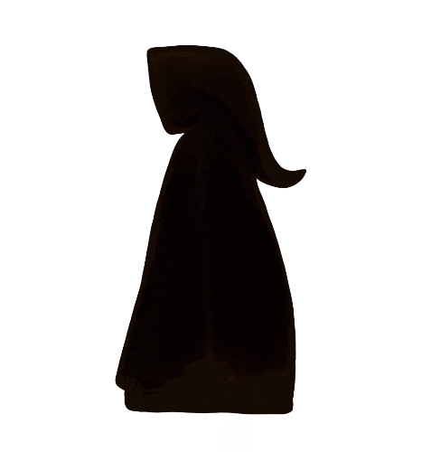
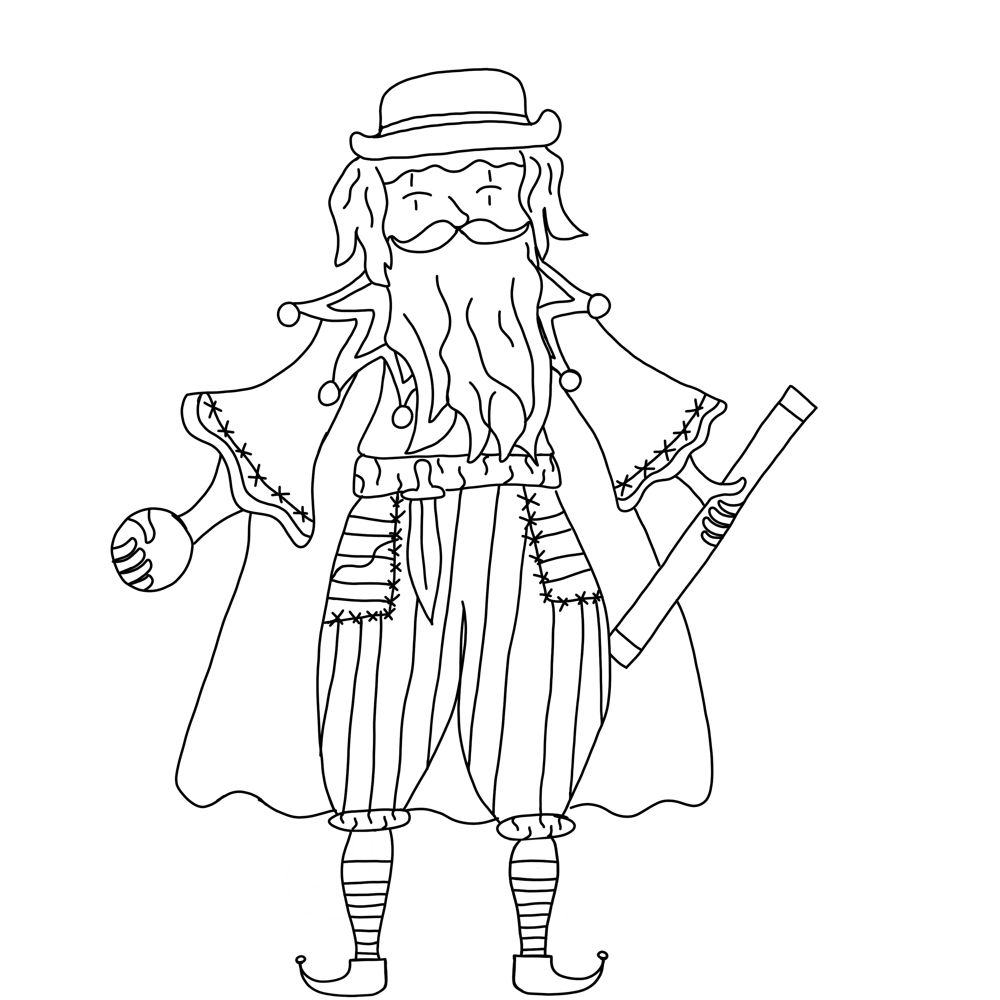
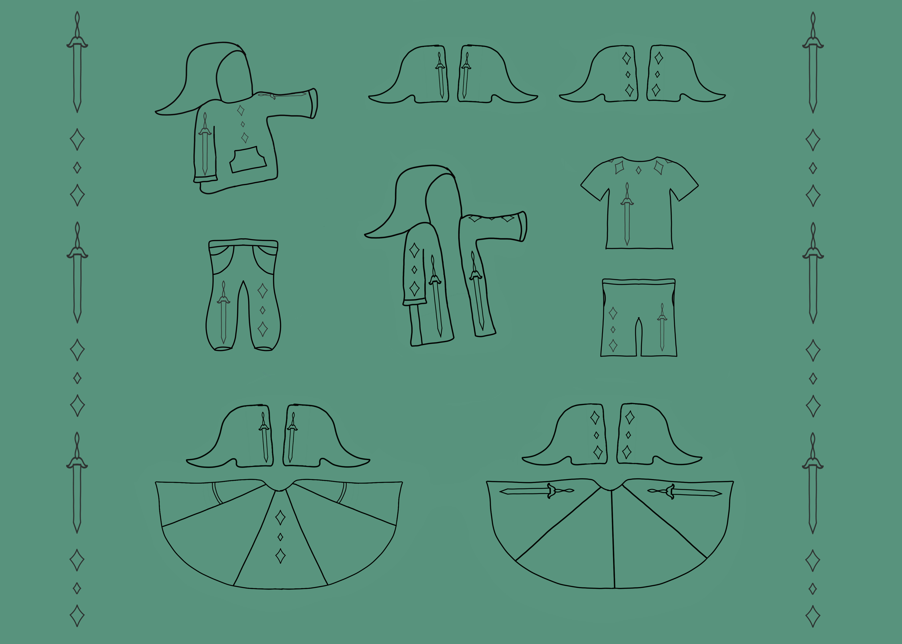
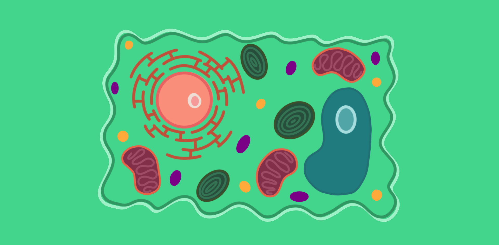

Creative Work
A Short Story by Sierra Merrick
Orbita 7 is a self sustaining space colony currently drifting through the Andromeda Galaxy. It is 1 of 9 remmenants of the planet Tubulus R, which was destroyed in The Great Asteroid War of the Celadonian Era. The inhabitants of Orbita 7 are a broad intermix of many different galactic species, living in harmony and exploring the vastness of space.
Digital Art by Sierra Merrick



